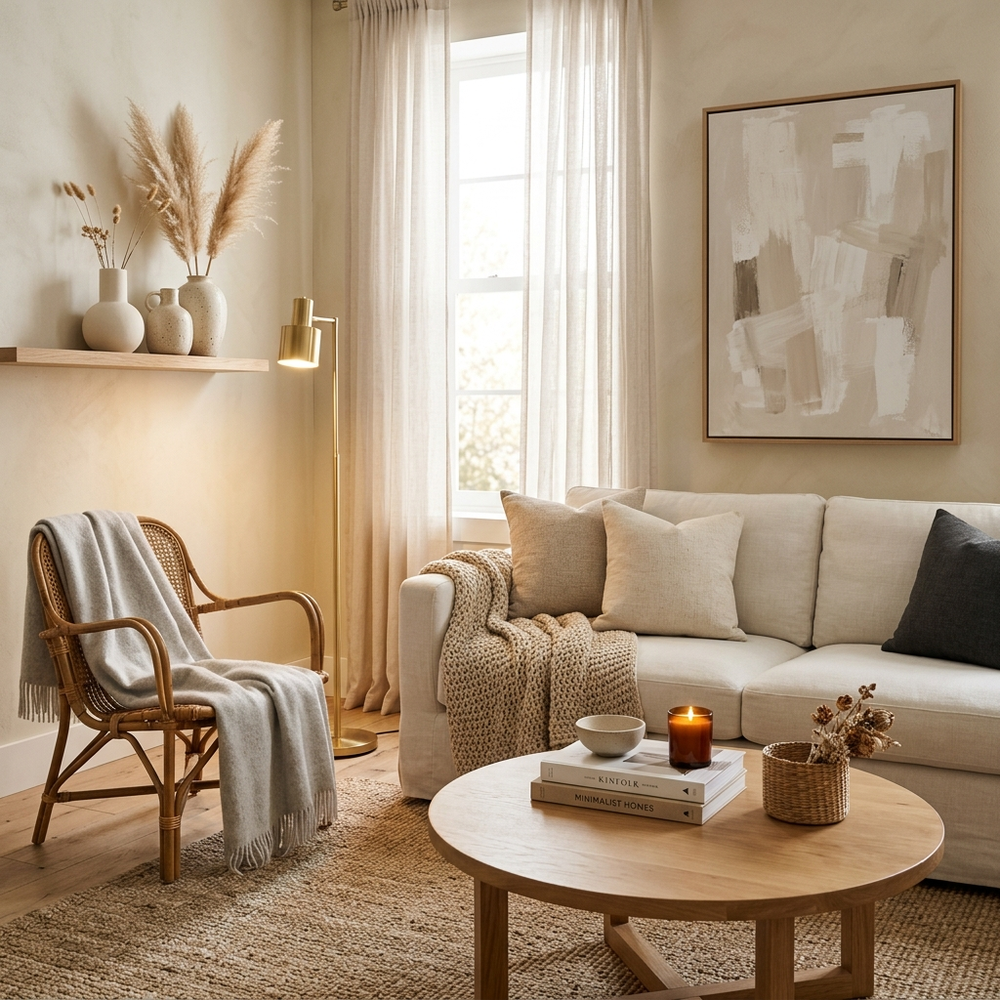
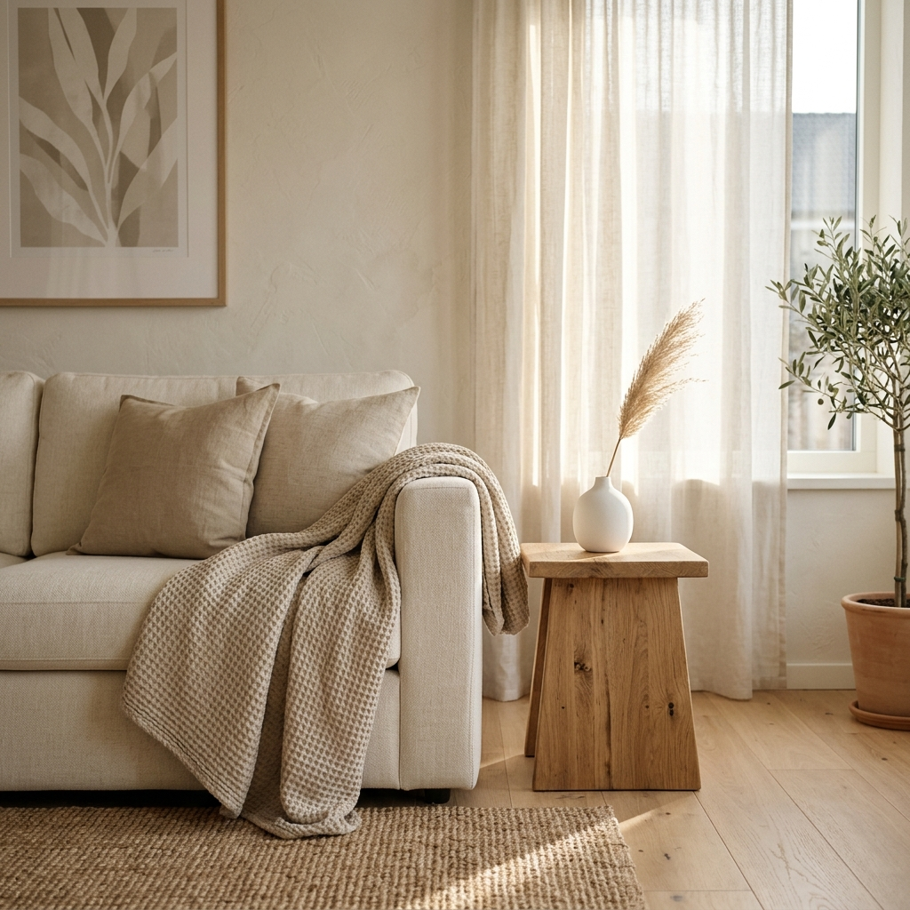
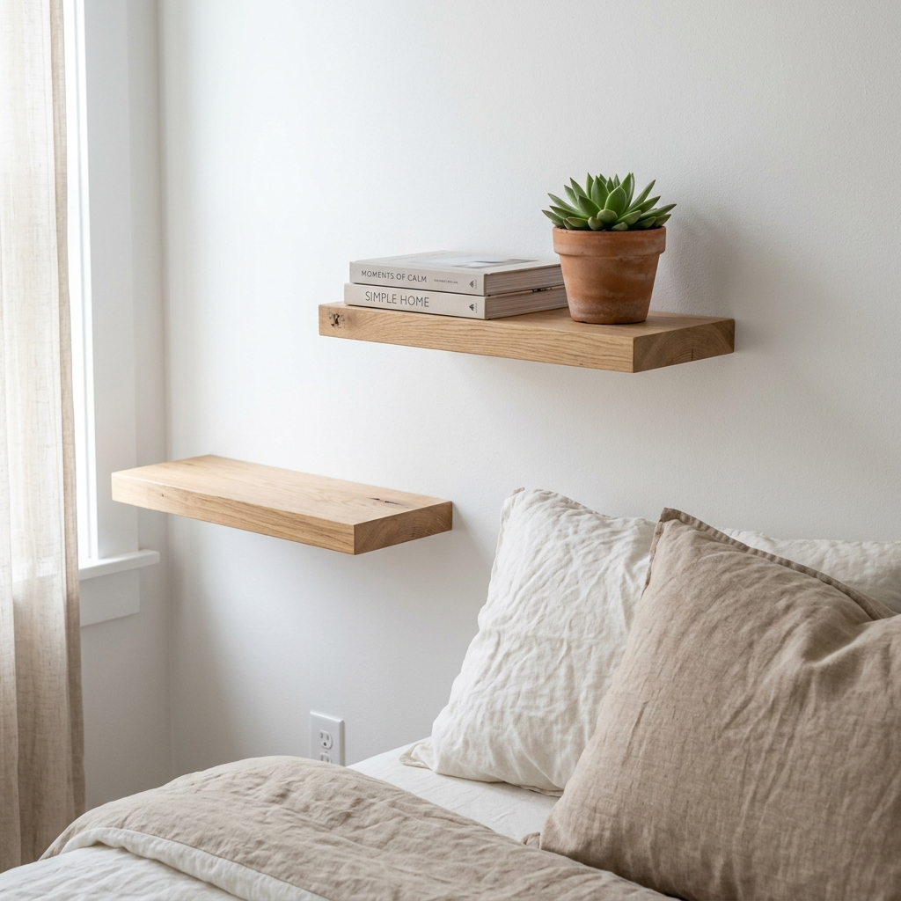
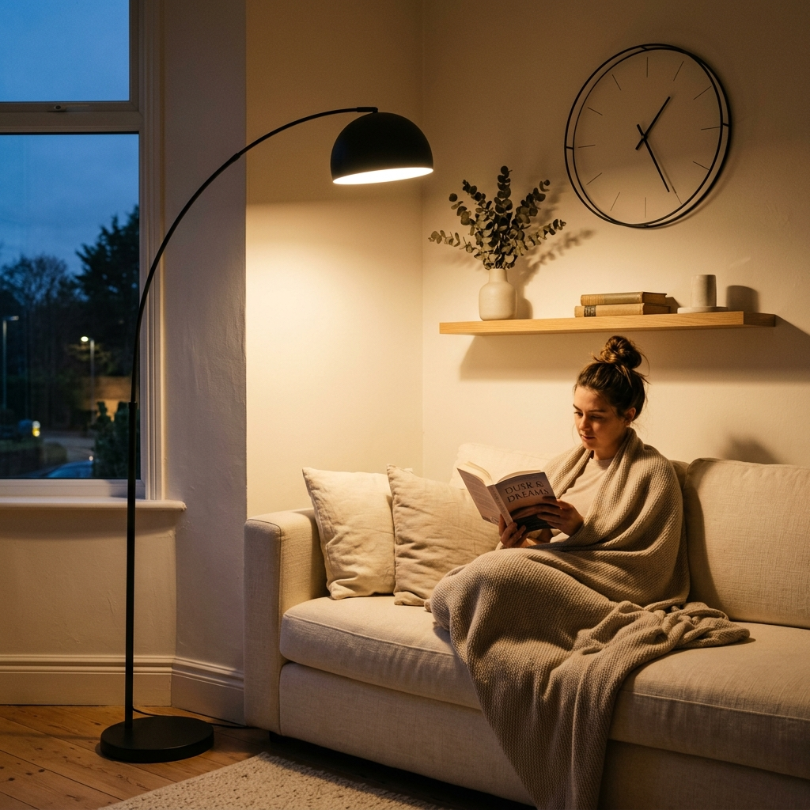
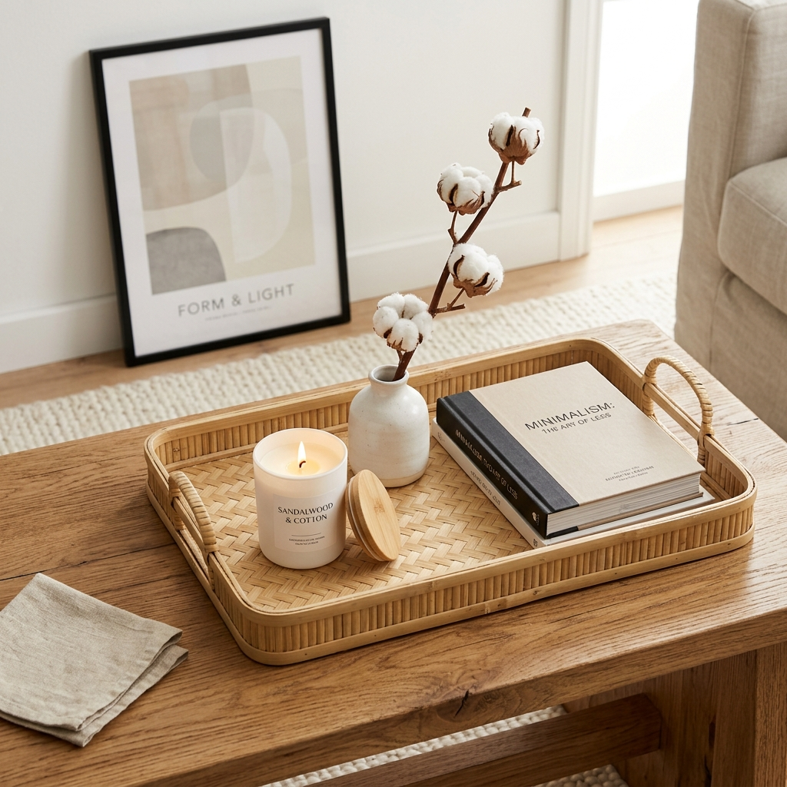
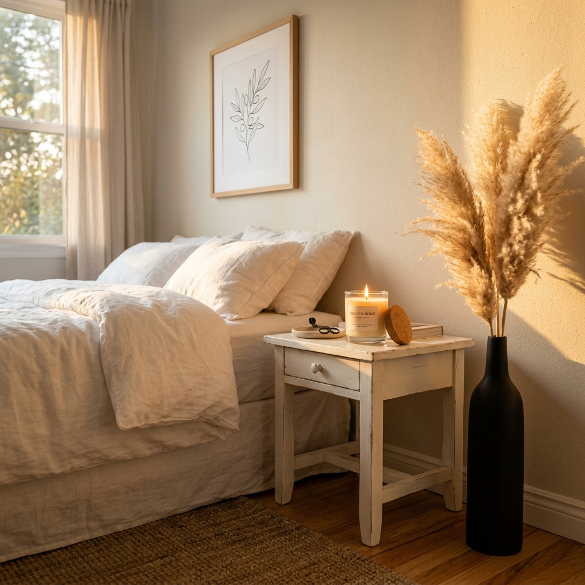

10 Minimalist Decor Pieces Under $50 | Stylish & Affordable
Shop smarter, not harder. Discover 10 must-have minimalist decor pieces under $50 — curated affordable picks to refresh your living room, bedroom, and small spaces in 2026.
Here's a truth most interior design content skips: a beautiful home is about intention, not investment. The cleanest, most calming spaces in the world aren't filled with expensive furniture — they're filled with the right things, placed with purpose.
That's the heart of minimalist decor. Less clutter. More breathing room. And yes — it's completely achievable on a tight budget. Every piece on this list costs under $50, ships from Amazon, and is the kind of thing that makes people walk into your space and quietly think, "this feels so put-together."
"A minimalist home isn't empty. It's full of exactly what belongs there."
Whether you're decorating a small apartment, refreshing your living room, or just trying to bring some calm back to a busy bedroom — this guide gives you 10 practical, stylish picks that punch well above their price tag. Each one is paired with a specific Amazon search term so you can find it in minutes.

Ceramic Bud Vase Under $20
There is nothing that transforms a plain shelf or side table faster than a small ceramic vase. It's one of the oldest tricks in the minimalist decorator's book — and it works every single time. A single stem, a dried sprig, or even an empty vase sitting on its own carries visual weight without noise.
WHY IT WORKS FOR MINIMALIST STYLE
Minimalism is built on the idea that each object should earn its place. A well-chosen bud vase does exactly that: it adds softness and organic texture without competing with anything around it. Choose matte finishes in white, cream, beige, or sage green — these neutral tones sit quietly in any room without demanding attention.
Styling Tips:
- Best For: Living room, bedroom, bathroom counter, dining table
- Color Guide: Matte white, warm beige, terracotta, sage green
- Group three vases of different heights together — one short, one medium, one tall — for an effortlessly curated look. Odd numbers always photograph better too.
You can find a wide selection of matte ceramic bud vases on Amazon, many available in sets of 2–3. Check latest price on Amazon — most options come in under $20 with free Prime shipping.
Recommended: Matte Ceramic Bud Vase Set
Woven Cotton Throw Blanket Under $40
A throw blanket is one of those rare decor pieces that earns double-duty: it makes your space look better and makes it feel better. Draped over the arm of a sofa or folded at the foot of a bed, the right throw instantly communicates warmth, comfort, and intention.
WHY IT WORKS FOR MINIMALIST STYLE
The key is texture and tone. For a minimalist aesthetic, stick to natural fibers — cotton, linen, or a cotton-blend. Avoid busy patterns or bright colors. Instead, reach for oatmeal, ivory, warm gray, soft camel, or muted dusty blue. These tones layer well without making the room feel cluttered.
Styling Tips:
- Best For: Living room sofa, bedroom, reading chair, small studio
- Texture to Look For: Waffle weave, chunky knit, loose cotton fringe
- Don't fold it perfectly. A casually draped throw looks intentionally relaxed — which is exactly the mood minimalist rooms aim for. One corner hanging lower than the other is fine.

Amazon has dozens of woven cotton throw blankets under $35, especially in neutral colorways. Look for "100% cotton" in the product description for the most breathable option.
Recommended: Woven Cotton Throw Blanket Neutral
Floating Wood Wall Shelves Under $45
Small spaces have a specific problem: you need storage, but you can't afford to lose floor space. Floating shelves solve both sides of that problem. They create vertical storage while keeping the floor clear — which is one of the fastest ways to make a small room feel bigger.
WHY IT WORKS FOR MINIMALIST STYLE
Floating shelves with a natural wood finish (light oak, walnut, or pine) bring warmth and organic texture to any wall. Because they're sleek and wall-mounted, they don't read as "furniture" — they read as part of the architecture. Keep them sparsely styled: one plant, two books stacked horizontally, one small object. That's it.
Styling Tips:
- Best For: Small apartments, home offices, living rooms, bedrooms
- Size Tip: 24" shelves work for most walls; go 36" for statement display
- Install shelves at eye level in a staggered or asymmetric arrangement rather than evenly spaced. It looks more curated and intentional — not like a store display.
Floating wood wall shelves are among the most budget-friendly decor upgrades you'll find on Amazon — sets of two often come in under $40.
Recommended: Floating Wood Wall Shelf Minimalist Rustic
Linen Throw Pillow Covers Under $25
New pillow inserts are expensive. New covers are not. This is one of the smartest moves in budget home decor: swap out your current pillow covers for linen or linen-blend options in neutral tones, and your sofa or bed instantly looks like a different room.
WHY IT WORKS FOR MINIMALIST STYLE
Linen has a natural, slightly textured surface that adds visual interest without pattern. It wrinkles slightly when you touch it, which actually adds to the lived-in warmth of a minimalist space — nothing too stiff or precious. Stick to a palette of two or three tones: white + warm beige + a muted dusty pink or sage works beautifully.
Styling Tips:
- Best For: Sofa, bed, reading nook, window seat
- Standard Sizes: 18x18", 20x20" — both work on most standard inserts
- Mix one solid linen cover with one that has a subtle texture variation (like a boucle or ribbed weave) in the same color family. It adds depth without breaking the calm palette.

Linen throw pillow covers are available in multipacks on Amazon — you can often get four covers for under $25, which is remarkable value.
Recommended: Linen Pillow Covers Neutral Beige 18x18
Minimalist Wall Clock Under $35
A wall clock might seem like a functional object — and it is — but it also functions as wall art. The right clock fills negative wall space with a geometric statement while actually serving a purpose. That dual functionality is very on-brand for minimalist design.
WHY IT WORKS FOR MINIMALIST STYLE
Choose a clock with a thin metal frame (gold, black, or brushed brass), minimal or no numerals, and clean hands. Nordic-style designs — where the clock face is bare except for simple markers — are a perfect match for modern minimalist living rooms. Avoid bulky frames or battery compartments that protrude significantly from the wall.
Styling Tips:
- Best For: Living room, kitchen, home office, entryway
- Ideal Size: 10–12" diameter for most rooms; 14–16" for large walls
- Place your clock slightly off-center on a wall — not dead center. It feels more designed that way, like it belongs to a gallery arrangement rather than hanging in isolation.
Search Amazon for silent minimalist wall clocks — the "silent" filter is important since non-ticking mechanisms keep the room calm.
Recommended: Minimalist Wall Clock Silent No Tick
LED Arc Floor Lamp Under $50
Lighting is underrated in most budget decor conversations, but it might be the single biggest variable in how a room feels. Overhead lighting is often harsh and unflattering. A floor lamp with a warm bulb creates soft pools of light that make any room feel more intimate and intentional.
WHY IT WORKS FOR MINIMALIST STYLE
Arc-style floor lamps — where the arm curves over a sofa or reading chair — combine form and function beautifully. They look architectural, take up minimal floor footprint, and create layered lighting without requiring an electrician. Look for matte black or brushed gold finishes, and pair with a warm 2700K bulb for the best ambiance.
Styling Tips:
- Best For: Living room corner, reading nook, studio apartment
- Bulb Tip: Always use warm white (2700–3000K) — never cool white
- Position the lamp so it arcs over one end of your sofa — it creates a natural "reading zone" that makes the whole room feel more purposefully arranged, even if nothing else changes.

You can find LED arc floor lamps on Amazon starting around $35 — many include a built-in USB charging port, which adds practical value without bulk.
Recommended: Arc Floor Lamp Minimalist Matte Black
Abstract Neutral Wall Art Print Under $30
Bare walls in a minimalist home can read two ways: intentionally serene, or just empty. The difference is usually one or two considered art prints. The key word here is "considered" — not mass-produced motivational quotes, not high-contrast busy patterns, but something simple, abstract, and quietly beautiful.
WHY IT WORKS FOR MINIMALIST STYLE
Abstract prints in earthy tones — think warm beige, terracotta, muted sage, or ink black on cream — add personality to a wall without overwhelming it. Botanical line-art prints, minimal landscape prints, or abstract blob forms all work well. Frame them yourself with a simple thin-frame option from Amazon to keep costs low.
Styling Tips:
- Best For: Living room, bedroom, hallway, home office
- Arrangement Idea: Gallery wall of 2–3 prints in matching frames, mixed sizes
- Print a digital art file locally at a print shop like Walgreens or Staples for $3–$5, then frame it with an Amazon frame. Total cost: under $20 for gallery-quality wall art.
Amazon sells unframed abstract art prints as well as framed options — both are worth exploring. Many sellers offer 3-print sets for under $25.
Recommended: Abstract Minimalist Wall Art Print Neutral
Bamboo Tray or Catchall Dish Under $20
One of the fastest ways to make a surface look messy is to have small objects scattered without any structure. A simple bamboo tray or ceramic catchall dish corrals those items — remote controls, keys, candles, small plants — into a contained, intentional arrangement that looks styled rather than random.
WHY IT WORKS FOR MINIMALIST STYLE
Bamboo trays are a favorite among minimalist interior designers because they're natural, lightweight, and visually quiet. They work on coffee tables, console tables, bathroom counters, and kitchen islands alike. The tray becomes a "zone" — and zones create the visual organization that makes minimalist spaces feel calm and considered.
Styling Tips:
- Best For: Coffee table, bathroom, kitchen counter, nightstand
- What to Put In It: Candle + vase + one small book — keep it to 3 objects max
- The "rule of three" applies perfectly to tray styling: one tall object, one short object, one flat or round object. Different heights create natural visual movement within the tray.

Bamboo serving trays and catchall dishes are widely available on Amazon — rectangular bamboo trays in a natural finish are the most versatile option.
Recommended: Bamboo Decorative Tray Rectangle Natural
Dried Pampas Grass Arrangement Under $25
Dried botanicals have become synonymous with the modern minimalist aesthetic — and for good reason. They bring organic texture, soft movement, and warmth to a space without needing water, sunlight, or maintenance. A small bundle of pampas grass in a slim vase is the kind of thing that makes a room feel like it belongs in a design magazine.
WHY IT WORKS FOR MINIMALIST STYLE
Pampas grass has a feathery, delicate texture that contrasts beautifully with clean architectural lines and smooth surfaces. It softens the hard edges that minimalist interiors can sometimes feel like they have too much of. It's also long-lasting — a good dried arrangement can hold up for a year or more with minimal care.
Styling Tips:
- Best For: Floor vase, tall ceramic, bookshelf, entryway console
- Care Tip: Spray with hairspray lightly to minimize shedding
- Place a large bundle in a tall, simple floor vase near an entryway or in an empty corner. It fills dead space elegantly without adding visual clutter — making it perfect for small spaces.
You can find dried pampas grass bundles on Amazon in small and large sizes — look for natural cream or bleached white for the most neutral look.
Recommended: Dried Pampas Grass Natural Boho
Scented Soy Candle in Glass Jar Under $20
Minimalist decor is as much about how a space feels as how it looks — and scent is the most immediate way to change how a space feels. A well-chosen soy candle in a clean glass jar ticks multiple boxes at once: it's a visual object, a light source, and an ambient experience. All for under $20.
WHY IT WORKS FOR MINIMALIST STYLE
Soy candles in clear or frosted glass jars have a naturally minimal aesthetic. They don't need to be dressed up. Place them on your bamboo tray, your floating shelf, or your bathroom counter. For scents, lean toward clean, earthy options: sandalwood, cedar, linen, or white tea. Avoid anything too sweet or heavily floral — it doesn't match the mood of a calm, neutral interior.
Styling Tips:
- Best For: Living room, bedroom, bathroom, home office
- Scent Direction: Sandalwood, cedarwood, linen, sea salt, eucalyptus
- After the candle burns out, clean the jar and reuse it as a small pencil holder, cotton swab jar, or mini vase. Zero waste, and completely on-brand for a minimalist lifestyle.

Amazon carries a wide range of soy wax candles in glass jars — look for ones made with a cotton wick and free from synthetic fragrances for the cleanest burn.
Recommended: Soy Candle Glass Jar Sandalwood Minimalist
Your Space, Your Way
You don't need to spend thousands to create a home that feels calm, curated, and genuinely yours. The ten pieces above — all available for under $50 on Amazon — are proof that thoughtful choices matter far more than expensive ones.
Start with just two or three items from this list. A vase here, a throw there, a candle on the coffee table. Small additions, placed with intention, are all it takes to shift how a space feels. That's the whole philosophy of minimalist decor, and now you have everything you need to try it.
Frequently Asked Questions (People Also Ask)
What is the best minimalist decor style for a small apartment?
For small apartments, the best minimalist approach focuses on multi-functional pieces and vertical space. Floating shelves, arc floor lamps (which take up minimal floor space), and lightweight textiles like linen pillow covers and woven throws create a layered, styled feel without crowding the room. Stick to a neutral palette — cream, warm white, beige, and one soft accent color — to visually expand the space.
How do I decorate my home like a minimalist on a budget?
Start by removing rather than adding — clear out clutter first, then identify three or four intentional additions that serve both function and aesthetics. Budget-friendly minimalist decor is very achievable: swap out pillow covers instead of buying new pillows, use dried botanicals instead of live plants, and look for matte ceramic or bamboo objects in neutral tones. Amazon is an excellent source for affordable minimalist accessories, especially in the $10–$35 range.
What colors work best for minimalist home decor?
The most versatile minimalist palette is built around warm neutrals: off-white, cream, warm beige, oatmeal, and light warm gray. These tones layer well together and read as intentional rather than colorless. To prevent a space from feeling flat, add texture variation — a chunky woven throw, a matte ceramic vase, a raw wood surface. If you want an accent color, lean toward muted options: dusty sage, terracotta, or dusty blue work beautifully without breaking the calm.
Are Amazon minimalist decor finds actually good quality?
Consistently, yes — especially in the home decor category. Amazon's ecosystem of small sellers and private label brands has matured significantly, and many products in the $15–$45 range are genuinely well-made. The key is reading recent reviews (look for photos submitted by buyers), checking the material description carefully, and filtering for items with 4+ star ratings on 200+ reviews. The items in this guide fall squarely in that reliable zone.
How many decor pieces should a minimalist room have?
There's no hard rule, but a good starting point is the "three object rule" per surface — one tall, one medium, one small or flat. For walls, one to two intentional pieces per wall is enough. The goal isn't to have zero objects; it's to have objects that you genuinely chose, placed with breathing room around them. Negative space is not empty — it's what makes everything else in the room feel considered.